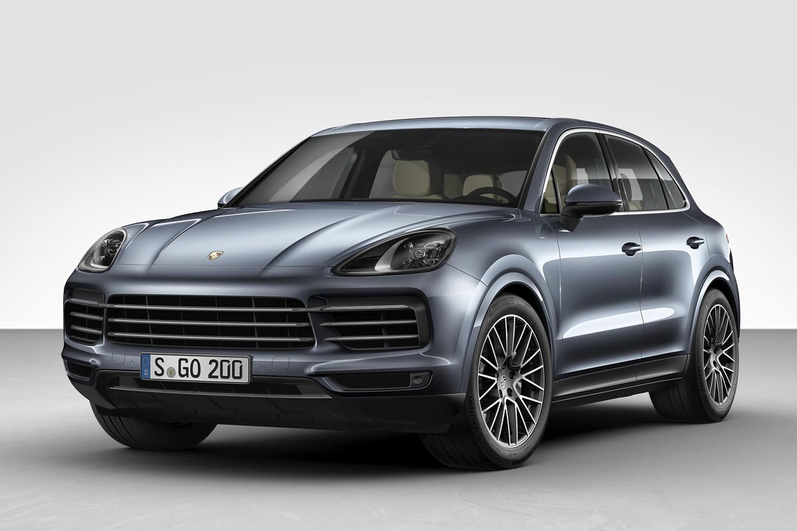
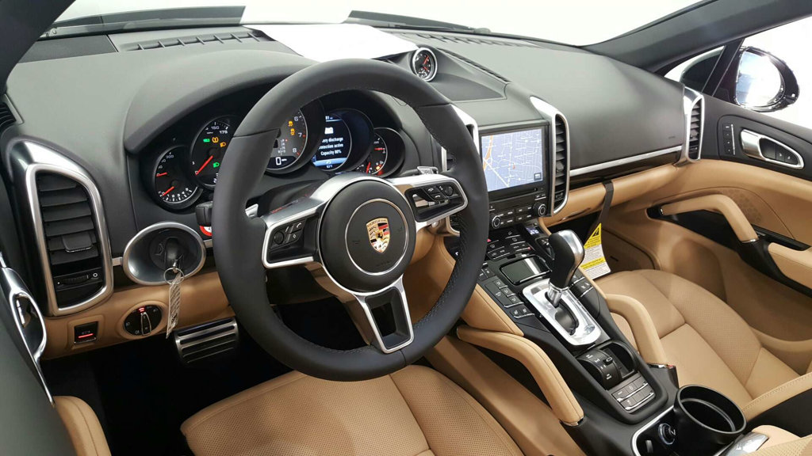

Porsche Cayenne 2018-Характеристики
Porsche Cayenne 2018 модельного року дебютував на автосалоні у Франкфурті восени 2017 го. Зовні автомобіль не зазнав серйозних змін. Але схожість з попереднім поколінням оманливе - всередині це абсолютно новий автомобіль. Німці покладають великі надії на нове покоління Cayenne. Саме від цієї моделі залежить фінансове благополуччя Porsche в наступному році. Тому у компанії не було права на помилку.
«Cayenne» став довшим (на 63 мм), але нижче (на 9 мм). А це значить, що стало більше місця в салоні. Також завдяки збільшеному заднього звису багажник став більше на 100 літрів. Тепер п'ятимісний варіант вміщує 770 літрів. Габарити автомобіля змінилися через шасі - новинка побудована на новій платформі групи Volkswagen, в яку входить Porsche. Ця ж платформа використовувалася при створенні двох інших люксових моделей: Audi Q7 і Bentley Bentayga. Нова приладова панель схожа на ту, що використовується в Porsche Panamera. Всі також присутня велика центральна консоль. Однак тепер вона виглядає акуратніше завдяки 12,3-дюймовому сенсорному дисплею.

На старті продажів будуть доступні тільки дві версії: Cayenne і Cayenne S.
Перший буде комплектуватися 3-літровим бензиновим мотором з турбонаддувом. Його віддача - 335 кінських сил потужності і 450 Нм крутного моменту. Такий агрегат зможе розганяти «Кайенн» до «сотні» за 6,5 секунди.
Максимальна швидкість -245 км / ч.
Porsche Cayenne S отримає 2,9-літровий бензиновий двигун з двома турбінами. Його потужність складе 434 кінських сили, а крутний момент - 550 Нм.
Розгін до сотні у такого кросовера займе 5,2 секунди. А максимальна швидкість складе 265 кілометрів на годину.Зовнішні габаритні розміри кузова нового Субару Форестер 2016-2017 року не змінилися і складають 4595 мм у довжину, 1795 мм в ширину, 1735 мм у висоту, з 2640 мм колісної бази і 220 мм дорожнього просвіту при установці шин 225/60 R17 або 225 / 50 R18.
Porsche не ризикує кардинально міняти дизайн «Кайенна». Та й в цьому немає необхідності - кросовер і без того відмінно продається. Більш того, сьогодні це бестселер німецької люксової марки. Тому в компанії не бачать необхідності, йти на якісь революційні кроки в зміні зовнішнього вигляду. Зовнішній вигляд Cayenne 2018 увібрав в себе стилістичні рішення, які вже були випробувані на нових Macan і Panamera.Згодом у продажу також з'являться більш швидкі версії - GTS, Turbo і Turbo S. А ось дебют дизельних Porsche Cayenne 2018 під великим питанням.